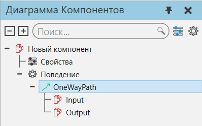
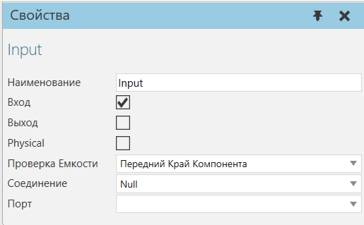

Перенос компонентов в другие поведения |
|
Поведения, поддерживающие поток материалов, можно подключить к компонентам для передачи внутри компонента путем редактирования свойств коннекторов. 1.В трехмерном мире выберите компонент. 2.Нажмите на вкладку Моделирование, а затем в панели Диаграмма компонента, Дерево узлов компонента, найдите поведение, которое вы хотите использовать для переноса компонентов.  3.Сделайте одно из следующих действий: ·Если поведение имеет видимый коннектор, разверните поведение и выберите соответствующий коннектор. Например, если вы хотите передать компоненты, выберите коннектор с меткой Вход или проверьте на панели Свойства, что свойство Input выбранного коннектора включено. Обратите внимание, что если коннектор уже связан с другим коннектором, вы замените или отредактируете этот коннектор. ·Если вы хотите создать новый коннектор в поведении для обработки передачи, выберите и щелкните правой кнопкой мыши поведение, а затем щелкните Добавить коннектор (Если в выпавшем меню Добавить коннектор был недоступен, поведение либо ограничено текущим набором коннекторов, либо не может быть использовано в этом случае). Далее выбираем добавленный коннектор, а затем в панели Свойства, включите необходимые свойства. Например, если вы хотите передать компоненты наружу, включите свойство Выход. Обратите внимание, что определенные варианты поведения, такие как контейнер компонентов, следует использовать только для передачи и хранения компонентов. В большинстве таких случаев скрипт Python используется для обработки того, как компоненты извлекаются из хранилища и переносятся в другое место. 4.На панели Свойства, выполните все следующие действия: ·В разделе Соединение, выберите поведение, которое вы хотите включить в передачу. Вы не можете включить поведение, которое не указано в качестве выбора. ·В разделе Порт, щелкните коннектор поведения указанного Соединения, который вы хотите использовать для передачи.
 |